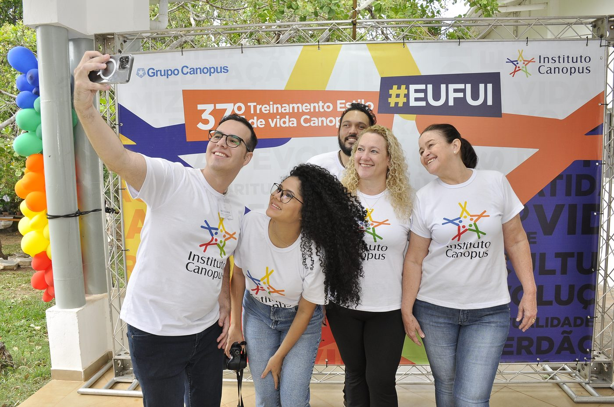
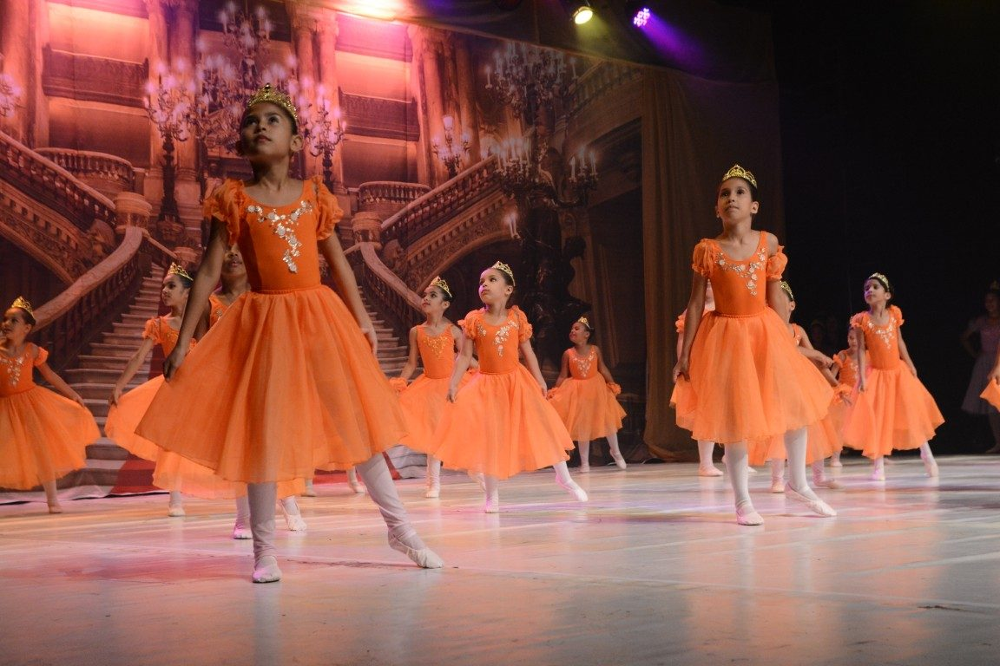

História do Instituto Canopus
O Instituto Canopus é uma instituição social, sem fins lucrativos que nasceu com objetivo de compartilhar informações, por meio de cursos e treinamentos com toda a sociedade, a partir de um ideal do Presidente Fundador Sr. Marcos Roberto Cruz quando participou do curso de Teologia em 1977, e ficou encantado com o conhecimento que havia adquirido, desde então despertou o desejo de passá-lo adiante.
Em 1991, Sr Marcos Cruz, inicia seu desejo e coloca o projeto em prática, indo de casa em casa ministrar, palestras motivacionais e culturais, com exibição de vídeos e filmes educativos, nos bairros da cidade de Cuiabá/MT e Várzea Grande/MT.
No ano de 2004, após participar de um encontro religioso, Sr Marcos Cruz, reformulou o projeto, dando o nome “Treinamento Estilo de Vida Canopus”- E.V.C, que foi elaborado para ajudar as pessoas na transformação e no desenvolvimento pessoal, oferecendo a oportunidade do indivíduo repensar a qualidade de vida nas relações consigo mesmo, com Deus, com a família, com os amigos, com o trabalho e com o meio ambiente. Para dar ferramentas que o auxiliem a desenvolver o equilíbrio do ser humano, tanto físico como espiritual, para planejar todas as áreas da sua vida.


Dois anos depois, em 01 de maio de 2006, foi assinado o Estatuto do Instituto Canopus oficializando assim a entidade até então denominada “Fundação Canopus. O Instituto Canopus escolheu ser protagonista, não só de treinamento, como também de responsabilidade social, com enfoque em Investimento Social Privado (ISP) das empresas do Grupo Canopus, oportunizando a inclusão social, desenvolvendo atividades para melhoria da qualidade de vida das pessoas, acreditando que as mudanças são primordiais para o crescimento na vida do indivíduo. Diante disso, apoia e executa projetos sociais na área da educação, cultura, assistência social, saúde, meio ambiente, segurança alimentar e nutricional, voluntariado, desenvolvimento econômico e social, combate à pobreza, geração de emprego, promoção da ética, da paz, da cidadania e dos direitos humanos.
Nossa atuação se ampliou nos seguintes projetos:
- Projeto Estilo de Vida Canopus
- Projeto Primeiro Passo
- Projeto Criança Feliz
- Projeto Constellation dança: arte e cultura
- Projeto Colcha de Retalhos
- Cenprhe Canopus
- Projeto Saciar
Missão
Buscar sustentabilidade econômica, social, ambiental, política e cultural para desenvolver o ser humano através de programas de capacitação e profissionalização; conhecimento das defesa de direitos; integração social e cultural e incentivo a criação de redes de colaboração social.
Visão
Ser uma Organização Social referência no Brasil no desenvolvimento de seu papel humanizador e recuperador da condição de vida do cidadão brasileiro.
Princípios, Crenças e Valores
- Respeito às Pessoas;
- Ética, Transparência, Honestidade e Credibilidade
- Reconhecimento
- Voluntariado